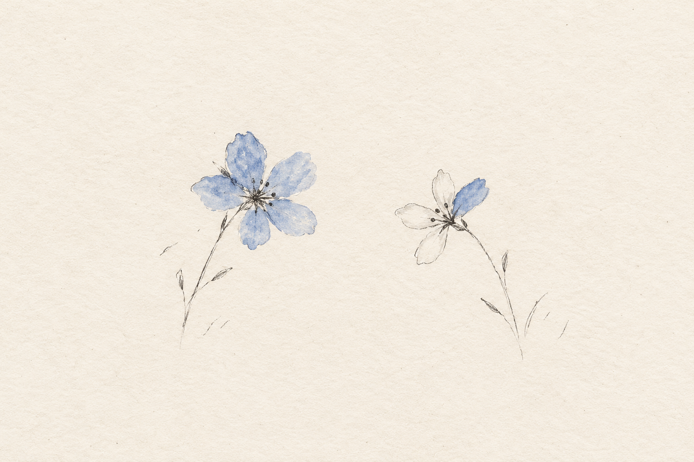
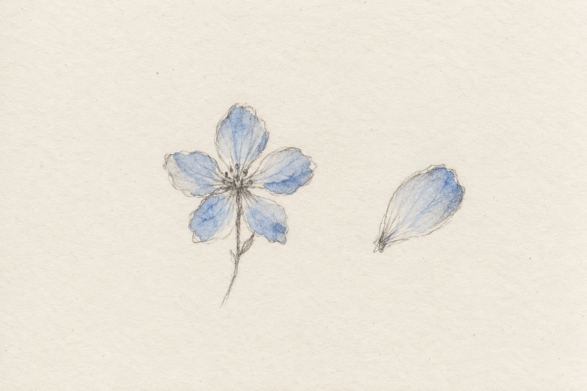
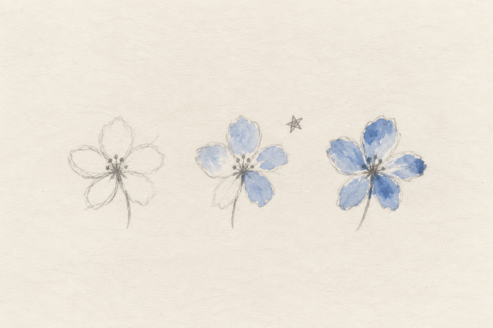
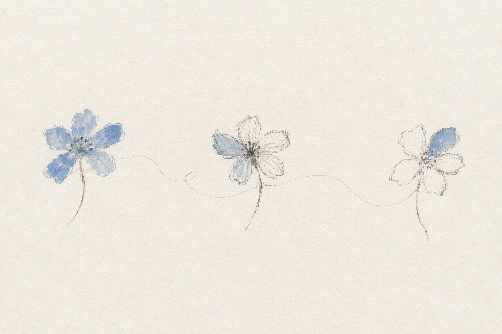

有时候，发出一张照片、一段文字，或一件花了很久才完成的作品，我们会忍不住再打开手机看一眼。有没有人停下来，有没有人留下一句话，有没有人恰好喜欢自己也很喜欢的那个细节。明明分享的时候没有说什么，心里却藏着期待：希望有人看见，也希望那个人会喜欢。
承认这件事，似乎有些不好意思。我们听过太多关于独立和强大的话，要认可自己，不依赖外界的评价。于是，连一句“我希望你夸夸我”，都要绕个弯才能说出口。可一个人能够独自完成很多事情，仍然可以期待回应。

01想被喜欢，也想被认真看待
我们愿意为一些细节花时间。挑一个更合适的颜色，把一句话改得更贴近心意，或者将一个已经能用的东西，再做得顺手些。这些努力不一定显眼，甚至很难向别人解释，为什么值得反复修改。所以，有人说“很好看”，我们会开心；有人接着说“我喜欢这里，你一定想了很久”，那份开心又会深一些。对方的目光越过了最后呈现出来的样子，碰到了藏在背后的认真。原来，那些自己反复斟酌过的地方，真的有人留意。

被看见，也可以发生在很普通的日子里。有人记得你提过的小事，发现你今天没有往常那么有精神，或是在你讲起一个尚不成熟的想法时，没有急着评价，而是听你说完。那一刻，我们会觉得，自己在另一个人的世界里，是有位置的。我想，这也是为什么有些回应会让人记很久。对方未必说了多么漂亮的话，却恰好注意到了一处用心，听懂了没有表达清楚的意思。原本需要费力解释的自己，在那一刻被理解了。
02一句鼓励，为什么会有分量
很多事情，都是带着不确定开始的。尝试一个方向，完成一件作品，或者把自己的想法讲给别人听，我们未必知道结果如何。有时已经付出了不少努力，却还说不清，自己究竟做得怎么样。这时候，具体的鼓励就有了分量。“这一段我读了两遍。”“你做的这个，刚好帮到了我。”“我发现你比上次更敢表达了。”它们让人知道，自己的努力在某个地方产生了作用，哪怕暂时还很小。

我更愿意相信这样的肯定。它不需要把一个人夸得无所不能，也不必承诺“你一定会成功”。认出一个值得保留的细节，一次真实的进步，就足以让下一步变得清楚。即使还有问题需要解决，人也能带着这份确认继续尝试。我们常常等到结果足够好，才觉得赞美有了充分的理由。可正在学习的人、还在摸索的想法，同样需要被认真对待。
03回应未必总来，期待依然可以坦然
当然，回应不会每次都如愿。认真写的文字可能没有多少人读，花心思做好的东西，也可能没引起太多兴趣。失落是会有的，不必马上用一句“我无所谓”把它盖过去。既然付出过，期待回响就是很自然的事。但一次安静的反馈，还不足以替整件事下结论。也许表达没有传达到，也许还没遇到感兴趣的人，也许作品本身确实有需要改进的地方。所以我提醒自己：先别急着下结论，把这些可能分开，看看能从中了解什么。“我想被看见”，也不意味着“所有人都应该喜欢我”。比起被很多人匆匆看过，我更珍惜有人愿意停下来，说出真实的感受。赞同也好，不同意见也好，有具体的交流，就有进一步理解彼此的机会。

想到这里，我也想把自己的欣赏说得更清楚。读到喜欢的段落，让写下它的人知道；留意到一个用心的细节，就不只在心里觉得不错。那些我们以为微不足道的回应，到了对方那里，可能恰好有了不一样的分量。我想被看见，也想看见你。看见作品背后的心思，看见表达里的犹豫，看见一个人还没有拿出漂亮结果时，已经付出的认真。如果你也记得某次被认真理解、被具体鼓励的经历，欢迎留言告诉我。那句对方或许已经忘记的话，你为什么一直记到现在？
如果这篇文章让你想起某个被理解的瞬间，欢迎点赞，也欢迎关注「独钓江雪9447」，一起分享更多想法。